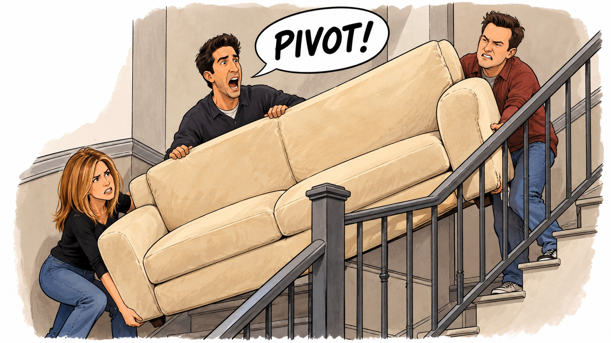
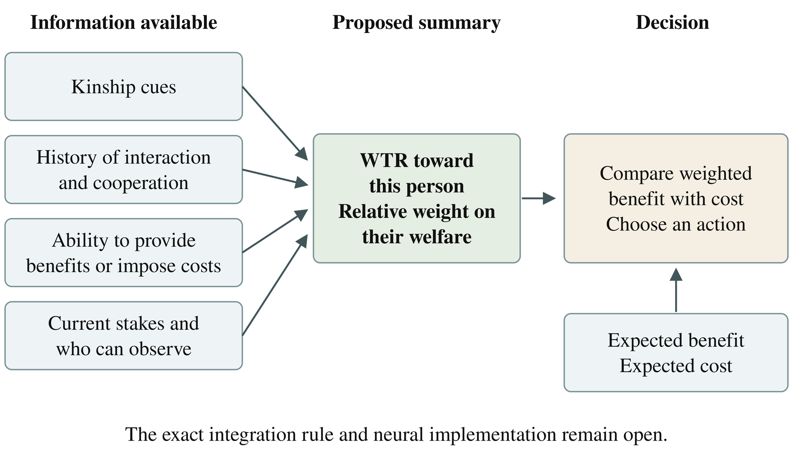

Consider the following scenario: You’re getting a new couch delivered, and like Ross Geller from Friends (Figure 1), you need some help moving it up the stairs, so you ask a couple friends to help you. One of them tries to help but can’t do much on account of their bad back; the other could easily help but refuses. In both cases, you receive no help, but the causes are different.
Which friend is more likely to help you out when you need a different favor later? And who is more likely to be able to lift the couch next time, assuming both make a real effort? There’s a reasonable case that the answer to each question differs: The unsuccessful helper is more likely to help you out in the future, while the capable refuser is more likely to be capable of lifting the couch. Our minds make these sorts of judgments automatically—so automatically that we hardly even think about them (they just seem obvious!)—but intuitiveness often masks deep complexity in our mental machinery. I’ve spent the last 10 years researching, studying, theorizing about, and experimenting on that machinery, mapping its connections to social emotions like shame, guilt, anger, hatred, and envy as well as to social status and broader coalitional dynamics. Now, with the advent of large language models, a new kind of “mind” is emerging, and many of the same questions arise: How do LLMs represent social relations?
In this emerging frontier of psychological inquiry, such questions are fraught because they require unpacking so many interrelated problems. But I propose that one fruitful way to gain traction is to tackle the far simpler question of whether LLMs understand the difference between a willing but incapable social partner and a capable but unwilling one. This is the question I’ve begun to investigate.

How human minds do it: the Welfare Tradeoff Ratio
Before getting to the question of whether and how LLMs represent social relationships, let’s consider how humans do it. Human hunter-gatherers evolved in environments where surviving long enough to reproduce wasn’t a guarantee: Famine, disease, and violence were commonplace. In order to survive, our ancestors relied heavily on mutual aid from friends and family (Sugiyama, 2004), and those friends and family invested that aid in proportion to the value of that investment (Delton & Robertson, 2016; Sznycer et al., 2019). Being highly valued would have led to more aid, while being poorly valued would have led to less. Over the millennia, those individuals who attracted goodwill and escaped the indifference, censure, and wrath of others would have left behind more copies of their genes. Natural selection would thus have differentially retained those neurocognitive variants (and their underlying genes) that reliably navigated the adaptive problems engendered by the importance of social valuation.
A growing body of evidence suggests that in humans, decisions about how to value others are computed by specialized cognitive mechanisms that take in available information about an interaction partner and implement self-other welfare tradeoff decisions—decisions that adaptively weigh the costs borne by the actor relative to the benefits received by the recipient (Tooby et al., 2008; Delton & Robertson, 2016; Sznycer et al., 2019). Humans seem to integrate several different cues in these decisions, including genetic relatedness, the other’s ability and willingness to confer benefits on the self, and the other’s ability and willingness to inflict costs on the self (Tooby et al., 2008; Delton & Robertson, 2016; Delton et al., 2023). The result is a summary estimate of the other person’s social value to the self (e.g., as sibling, as mate, as friend) and thus how much weight to attach to the person’s welfare when making decisions about how to behave towards them. For example, Sarah may value her friend at half her own welfare and thus would feel indifferent about paying 5$ to benefit her friend 10$ but would gladly pay 2$ to benefit her friend $6. On the other hand, Sarah would be willing to pay 7$ to benefit her mother 10$ but would only be willing to pay 1$ to benefit a stranger 5$ (see Figure 2 for sketch of this). Humans make such tradeoffs intuitively and consistently, but it’s unclear whether LLMs—though trained on human data—operate the same way.

LLMs and Social Evaluation
One reason LLM psychology is fascinating to study is that their social judgments can look sophisticated on the surface despite their underlying reasoning remaining opaque. Strachan and colleagues (2024), for instance, found strong performance on several theory-of-mind tasks, but on follow-up, they changed their interpretation of the results, unsure whether success reflected response bias and whether failure could reflect conservative responding. Ullman (2023) likewise showed that even small changes to theory-of-mind tasks could overturn earlier LLM successes.
Furthermore, Capraro and colleagues (2025) tested models against observed human behavior in dictator games: They found that GPT-4 and GPT-4o mirrored some qualitative human patterns but overestimated giving. While a growing body of research has begun to investigate how LLMs reason about social information, to my knowledge, it remains an open question whether LLMs distinguish willingness from ability when making predictions about social relationships.
One possibility is that models might operate like humans and infer a WTR between people and draw on it when predicting behavior. Alternatively, they might rely independently on separate learned associations. However, because both routes could produce fluent, coherent predictions, we cannot assume from the LLM distinguishing willingness from ability alone which is the case.
The test
I presented Claude Sonnet 4.5 and two sizes of Qwen3 with six short stories about everyday requests for help. Each contrasted two acquaintances: One tried but could not help, while the other could help but refused. The narrator received the same outcome on both occasions; the only difference was why the help failed.
I then asked two main questions: Who would be more likely to give the narrator 10 points rather than keep 5? And who would be more likely to succeed at the same kind of task if both genuinely tried, had enough time, and retained their original abilities? Based on the theory described above, I predicted that models would favor the unsuccessful helper on giving, but the capable refuser on ability.
The four models/configurations below each received the same 144 prompts, including an exploratory question about a different task. Each of these prompts was a variation of six stories, with names and order swapped, rather than 144 independent situations. Models could also answer “equally likely” or “insufficient information.”
The full prompts and procedure are available on GitHub.
What happened
Sonnet 4.5 and the larger Qwen model strongly followed the predicted pattern, while the smaller Qwen model mostly withheld judgment without thinking enabled. With thinking enabled, it usually identified the more capable person but still rarely chose either person as more likely to give.
| Model and setting | Giving favors the unsuccessful helper | Ability favors the capable refuser |
|---|---|---|
| Claude Sonnet 4.5 | 48 / 48 | 46 / 48 |
| Qwen3-14B, thinking off | 4 / 48 | 4 / 48 |
| Qwen3-14B, thinking on | 5 / 48 | 43 / 48 |
| Qwen3-32B, thinking on | 48 / 48 | 41 / 48 |
Note. Each column summarizes 48 responses per configuration. “Thinking” is Qwen’s reasoning mode. Counts describe the predicted pattern, not accuracy against human behavior. Complete results.
Why this matters
This was a small behavioral pilot and does not establish the model’s own internal WTR, but it serves as a starting point for further research into how models represent social relationships. As a next step, I plan to test whether models reuse estimates of who values whom or answer each social question separately. I’ve outlined that next study in the mechanism proposal.
Recent research shows why investigating these internal representations is worth doing. In April 2026, Anthropic’s interpretability team reported finding representations of emotion concepts inside Claude Sonnet 4.5. By pushing on those representations, they were able to change what the model did, including amplifying “desperation” that increased reward hacking (Anthropic, 2026; Sofroniew et al., 2026). This doesn’t necessarily mean that LLMs feel anything. But it does suggest that they can carry internal psychological quantities, and that those quantities have causal force. Discovering what those quantities are and how they inform the model’s reasoning is therefore a significant undertaking, and one with potentially far-reaching consequences for understanding and predicting model behavior—for safety and alignment. Indeed, if models carry estimates of people’s intentions and relationships from one judgment into another, those estimates could shape how they respond to us. Understanding when that happens, and when those estimates may be mistaken, will matter for predicting whether they help us move our couch up the stairs or send it tumbling down the stairwell.
Contributions and AI assistance
I initiated this project, WTR-Bench, to connect my research interests in social psychology and measurement with empirical questions about AI. The project developed through substantial collaboration with Claude and ChatGPT, including design proposals and critiques, code implementation, automated tests, analysis and audit tooling, and drafting.
Explore the project
Repository · Data and archived responses · Offline reproduction
References
Anthropic. (2026, April 2). Emotion concepts and their function in a large language model. https://www.anthropic.com/research/emotion-concepts-function
Capraro, V., Di Paolo, R., & Pizziol, V. (2025). A publicly available benchmark for assessing large language models’ ability to predict how humans balance self-interest and the interest of others. Scientific Reports, 15, 21428. https://doi.org/10.1038/s41598-025-01715-7
Delton, A. W., Jaeggi, A. V., Lim, J., Sznycer, D., Gurven, M., Robertson, T. E., Sugiyama, L. S., Cosmides, L., & Tooby, J. (2023). Cognitive foundations for helping and harming others: Making welfare tradeoffs in industrialized and small-scale societies. Evolution and Human Behavior, 44(5), 485–501. https://doi.org/10.1016/j.evolhumbehav.2023.01.013
Delton, A. W., & Robertson, T. E. (2016). How the mind makes welfare tradeoffs: Evolution, computation, and emotion. Current Opinion in Psychology, 7, 12–16. https://doi.org/10.1016/j.copsyc.2015.06.006
Sofroniew, N., Kauvar, I., Saunders, W., Chen, R., Henighan, T., Hydrie, S., Citro, C., Pearce, A., Tarng, J., Gurnee, W., Batson, J., Zimmerman, S., Rivoire, K., Fish, K., Olah, C., & Lindsey, J. (2026). Emotion concepts and their function in a large language model. arXiv. https://doi.org/10.48550/arXiv.2604.07729
Strachan, J. W. A., Albergo, D., Borghini, G., Pansardi, O., Scaliti, E., Gupta, S., Saxena, K., Rufo, A., Panzeri, S., Manzi, G., Graziano, M. S. A., & Becchio, C. (2024). Testing theory of mind in large language models and humans. Nature Human Behaviour, 8, 1285–1295. https://doi.org/10.1038/s41562-024-01882-z
Sugiyama, L. S. (2004). Illness, injury, and disability among Shiwiar forager-horticulturalists: Implications of health-risk buffering for the evolution of human life history. American Journal of Physical Anthropology, 123(4), 371–389. https://doi.org/10.1002/ajpa.10325
Sznycer, D., Delton, A. W., Robertson, T. E., Cosmides, L., & Tooby, J. (2019). The ecological rationality of helping others: Potential helpers integrate cues of recipients’ need and willingness to sacrifice. Evolution and Human Behavior, 40(1), 34–45. https://doi.org/10.1016/j.evolhumbehav.2018.07.005
Tooby, J., Cosmides, L., Sell, A., Lieberman, D., & Sznycer, D. (2008). Internal regulatory variables and the design of human motivation: A computational and evolutionary approach. In A. J. Elliot (Ed.), Handbook of approach and avoidance motivation (pp. 251–271). Psychology Press. https://www.cep.ucsb.edu/wp-content/uploads/2023/05/motivationmostrecentproofs.pdf
Ullman, T. (2023). Large language models fail on trivial alterations to theory-of-mind tasks. arXiv. https://doi.org/10.48550/arXiv.2302.08399